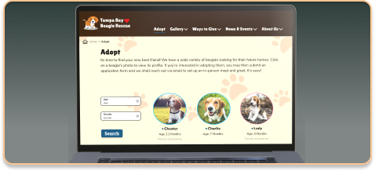
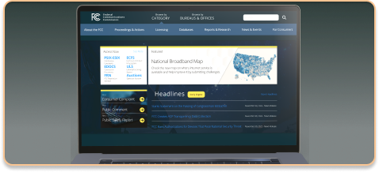

I am a UX/UI Designer located in Orlando, Florida with experience in delivering quality end-to-end UX/UI design solutions. I am passionate about creating design solutions that improve the lives of people across the planet.
About Me
Hello, my name is Dylan Ramos and I am a Puerto Rican Junior UX/UI designer currently residing in Florida. I grew up obsessing over music, fashion, and sports which quickly translated to my design style. I specialize in visual design and user research with an immense passion for advocating for the user.
As an emerging designer, my main tools include: Figma, Miro, Trello Board, VScode, and Invision. I approach each of my design problems alike, by creating a functional design solution first.
If you are looking for a UX/UI designer with fresh, trendy, and optimal design choices, I might just be your guy!
My Projects

The Tampa Bay Beagle Rescue Redesign
This non-profit redesign focuses primarily on a visual revamp. With a group of 2 other designers, we managed to create a whole new adopting experience for the user when on the search for their new companion. I believe the website should directly reflect the values and honest work the non-profit provides to it’s community.

The FCC Redesign
This government webpage redesign was aimed to create a more streamlined navigation bar and landing page. This redesign highlights information architecture while also providing an improved overall visual experience.